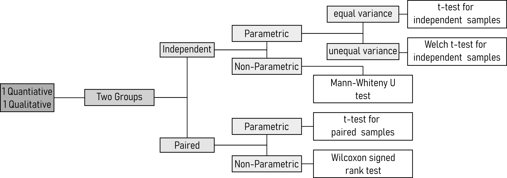
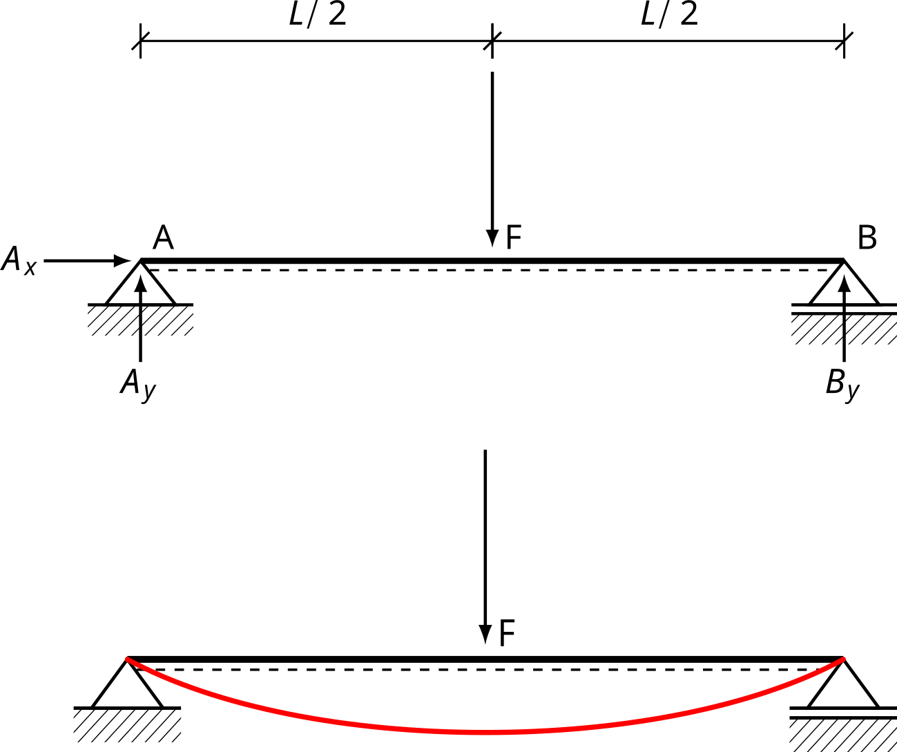

Inferential Statistics
Hypothesis Testing - Basics
Confidence Intervals
The drive shaft exercise - Confidence Intervals

Significance Level
Power Analysis

- H0:
- The coin is fair and lands heads \(50\%\) of the time.
- Ha:
- The coin is loaded and lands heads more than \(50\%\) of the time.
pwr.p.test(h = ES.h(p1 = 0.75, p2 = 0.50),
sig.level = 0.05,
power = 0.80,
alternative = "greater")
proportion power calculation for binomial distribution (arcsine transformation)
h = 0.5235988
n = 22.55126
sig.level = 0.05
power = 0.8
alternative = greater

p-value

Statistical errors
Parametric and Non-parametric Tests
Parametric Tests |
Non-Parametric Tests |
|---|---|
| One-sample t-test | Wilcoxon signed rank test |
| Paired t-test | Mann-Whitney U test |
| Two-sample t-test | Kruskal Wallis test |
| One-Way ANOVA | Welch Test |
Paired and Independent Tests

Distribution Tests
Quantile-Quantile plots
Sample data
| x | smpl_no |
|---|---|
| -0.56047565 | 1 |
| -0.23017749 | 2 |
| 1.55870831 | 3 |
| 0.07050839 | 4 |
| 0.12928774 | 5 |
| 1.71506499 | 6 |
| 0.46091621 | 7 |
| -1.26506123 | 8 |
| -0.68685285 | 9 |
| -0.44566197 | 10 |
Data Sorting
| x | smpl_no |
|---|---|
| -1.26506123 | 8 |
| -0.68685285 | 9 |
| -0.56047565 | 1 |
| -0.44566197 | 10 |
| -0.23017749 | 2 |
| 0.07050839 | 4 |
| 0.12928774 | 5 |
| 0.46091621 | 7 |
| 1.55870831 | 3 |
| 1.71506499 | 6 |
Theoretical Quantiles
| x | smpl_no | x_norm | x_thrtcl |
|---|---|---|---|
| -1.26506123 | 8 | -1.404601888 | 0.08006985 |
| -0.68685285 | 9 | -0.798376211 | 0.21232610 |
| -0.56047565 | 1 | -0.665875352 | 0.25274539 |
| -0.44566197 | 10 | -0.545498338 | 0.29270541 |
| -0.23017749 | 2 | -0.319572479 | 0.37464622 |
| 0.07050839 | 4 | -0.004316756 | 0.49827787 |
| 0.12928774 | 5 | 0.057310762 | 0.52285118 |
| 0.46091621 | 7 | 0.405008410 | 0.65726434 |
| 1.55870831 | 3 | 1.555994430 | 0.94014529 |
| 1.71506499 | 6 | 1.719927421 | 0.95727718 |
Plotting Points

Perfect Normal Distribution

Interpretation

Confidence Interval

The drive shaft exercise

Quantitative Methods

Expanding to non-normal disitributions


Test 1 Variable

One Proportion Test
| Category | Count | Total | plt_lbl |
|---|---|---|---|
| A | 35 | 100 | 35 counts 100 trials |
| B | 20 | 100 | 20 counts 100 trials |
| estimate1 | estimate2 | statistic | p.value | parameter | conf.low | conf.high | alternative |
|---|---|---|---|---|---|---|---|
| 0.350 | 0.200 | 4.915 | 0.027 | 1.000 | 0.018 | 0.282 | two.sided |
Chi2 goodness of fit test
| group | count_n_observed |
|---|---|
| group01 | 100.000 |
| group02 | 100.000 |
| group03 | 100.000 |
| group04 | 100.000 |
| group05 | 100.000 |
| statistic | p.value | parameter |
|---|---|---|
| 0.000 | 1.000 | 4.000 |
One-sample t-test
| group | mean_diameter | sd_diameter |
|---|---|---|
| group01 | 12.015 | 0.111 |
| group02 | 12.364 | 0.189 |
| group03 | 13.002 | 0.102 |
| group04 | 11.486 | 0.094 |
| group05 | 12.001 | 0.026 |

| group | statistic | p.value | method | alternative |
|---|---|---|---|---|
| group | estimate | statistic | p.value | parameter | conf.low | conf.high | method | alternative |
|---|---|---|---|---|---|---|---|---|
One sample Wilcoxon test

| group | statistic | p.value | alternative |
|---|---|---|---|
| group | t_tidy_p.value | wilcox_tidy_p.value |
|---|---|---|
Test 2 Variable (Qualitative or Quantitative)

Cochrane’s Q-test
Cochran’s Q test is employed when you have categorical data with three or more related groups, often collected over time or with repeated measurements. It assesses if there is a significant difference in proportions between the related groups.
Chi2 test of independence
Contingency tables
| Defects | Operator A | Operator B |
|---|---|---|
test results
Pearson's Chi-squared test with Yates' continuity correction
data: contingency_table
X-squared = 0, df = 1, p-value = 1Correlation

Pearson Corrrelation


Pearson's product-moment correlation
data: drive_shaft_rpm_dia$rpm and drive_shaft_rpm_dia$diameter
t = 67.895, df = 498, p-value < 2.2e-16
alternative hypothesis: true correlation is not equal to 0
95 percent confidence interval:
0.9406732 0.9578924
sample estimates:
cor
0.95 Spearman Correlation


Spearman's rank correlation rho
data: drive_shaft_time_defect$Production_Time and drive_shaft_time_defect$Defects
S = 15990, p-value < 2.2e-16
alternative hypothesis: true rho is not equal to 0
sample estimates:
rho
0.9040529
Pearson's product-moment correlation
data: drive_shaft_time_defect$Production_Time and drive_shaft_time_defect$Defects
t = 17.731, df = 98, p-value < 2.2e-16
alternative hypothesis: true correlation is not equal to 0
95 percent confidence interval:
0.8167872 0.9129728
sample estimates:
cor
0.8731278 Correlation - methodogical limits
| dataset | mean_x | mean_y | std_dev_x | std_dev_y | corr_x_y |
|---|---|---|---|---|---|

Test 2 Variables (2 Groups)

Test for equal variance (homoscedasticity)

F-Test (Hahs-Vaughn and Lomax 2013)
- Null Hypothesis: The variances of the different groups or samples are equal.
- Prerequisites:
- Independence
- Normality
- Number of groups \(= 2\)
F test to compare two variances
data: ds_wide$group01 and ds_wide$group03
F = 1.1817, num df = 99, denom df = 99, p-value = 0.4076
alternative hypothesis: true ratio of variances is not equal to 1
95 percent confidence interval:
0.7951211 1.7563357
sample estimates:
ratio of variances
1.181736 Bartlett Test (Bartlett 1937)
- Null Hypothesis: The variances of the different groups or samples are equal.
- Prerequisites:
- Independence
- Normality
- Number of groups \(> 2\)
Bartlett test of homogeneity of variances
data: diameter by group
Bartlett's K-squared = 275.61, df = 4, p-value < 2.2e-16Levene Test (Olkin June)
- Null Hypothesis: The variances of the different groups or samples are equal.
- Prerequisites:
- Independence
- Number of groups \(> 2\)
Levene's Test for Homogeneity of Variance (center = median)
Df F value Pr(>F)
group 4 38.893 < 2.2e-16 ***
495
---
Signif. codes: 0 '***' 0.001 '**' 0.01 '*' 0.05 '.' 0.1 ' ' 1t-test for independent samples
- Null Hypothesis: The means of the two samples are equal.
- Prerequisites:
- Independence
- Normal Distribution
- Number of groups \(=2\)
- equal Variances of the groups
First, the variances are compared in order to check if they are equal using the F-Test (as described in Section 12.1.1).
F test to compare two variances
data: group01 %>% pull("diameter") and group03 %>% pull("diameter")
F = 1.1817, num df = 99, denom df = 99, p-value = 0.4076
alternative hypothesis: true ratio of variances is not equal to 1
95 percent confidence interval:
0.7951211 1.7563357
sample estimates:
ratio of variances
1.181736 With \(p>\alpha = 0.05\) the \(H_0\) is accepted, the variances are equal.
The next step is to check the data for normality using the KS-test (as described in Section 9.2).
Asymptotic one-sample Kolmogorov-Smirnov test
data: group01 %>% pull("diameter")
D = 0.048142, p-value = 0.9746
alternative hypothesis: two-sided
Asymptotic one-sample Kolmogorov-Smirnov test
data: group03 %>% pull("diameter")
D = 0.074644, p-value = 0.6332
alternative hypothesis: two-sidedWith \(p>\alpha = 0.05\) the \(H_0\) is accepted, the data seems to be normally distributed.

The formal test is then carried out. With \(p<\alpha=0.05\) \(H_0\) is rejected, the data comes from populations with different means.
Two Sample t-test
data: group01 %>% pull(diameter) and group03 %>% pull(diameter)
t = -65.167, df = 198, p-value < 2.2e-16
alternative hypothesis: true difference in means is not equal to 0
95 percent confidence interval:
-1.0164554 -0.9567446
sample estimates:
mean of x mean of y
12.0155 13.0021 Welch t-test for independent samples
- Null Hypothesis: The means of the two samples are equal.
- Prerequisites:
- Independence
- Normal Distribution
- Number of groups \(=2\)
First, the variances are compared in order to check if they are equal using the F-Test (as described in Section 12.1.1).
F test to compare two variances
data: group01 %>% pull("diameter") and group02 %>% pull("diameter")
F = 0.34904, num df = 99, denom df = 99, p-value = 3.223e-07
alternative hypothesis: true ratio of variances is not equal to 1
95 percent confidence interval:
0.2348504 0.5187589
sample estimates:
ratio of variances
0.3490426 With \(p<\alpha = 0.05\) \(H_0\) is rejected and \(H_a\) is accepted. The variances are different.
Using the KS-test (see Section 9.2) the data is checked for normality.
Asymptotic one-sample Kolmogorov-Smirnov test
data: group01 %>% pull("diameter")
D = 0.048142, p-value = 0.9746
alternative hypothesis: two-sided
Asymptotic one-sample Kolmogorov-Smirnov test
data: group02 %>% pull("diameter")
D = 0.067403, p-value = 0.7539
alternative hypothesis: two-sidedWith \(p>\alpha = 0.05\) \(H_0\) is accepted, the data seems to be normally distributed.

Then, the formal test is carried out.
Welch Two Sample t-test
data: group01 %>% pull(diameter) and group02 %>% pull(diameter)
t = -15.887, df = 160.61, p-value < 2.2e-16
alternative hypothesis: true difference in means is not equal to 0
95 percent confidence interval:
-0.3912592 -0.3047408
sample estimates:
mean of x mean of y
12.0155 12.3635 With \(p<\alpha = 0.05\) we reject \(H_0\), the data seems to be coming from different population means, even though the variances are overlapping (and different).
Mann-Whitney U test
- Null Hypothesis: The medians of the two samples are equal.
- Prerequisites:
- Independence
- no specific distribution (non-parametric)
- Number of groups \(=2\)

This time a graphical method to check for normality is employed (QQ-plot, see Section 9.1). From the Figure 31 it is pretty clear, that the data is not normally distributed. Furthermore, the variances seem to be unequal as well.

Then, the formal test is carried out. With \(p<\alpha = 0.05\) \(H_0\) is rejected, the true location shift is not equal to \(0\).
Wilcoxon rank sum test with continuity correction
data: diameter by group
W = 7396, p-value = 4.642e-09
alternative hypothesis: true location shift is not equal to 0t-test for paired samples
- Null Hypothesis: True mean difference is not equal to 0.
- Prerequisites:
- Paired Data
- Normal Distribution
- equal variances
- Number of groups \(=2\)
Using the F-Test, the variances are compared.
F test to compare two variances
data: diameter by timepoint
F = 1, num df = 9, denom df = 9, p-value = 1
alternative hypothesis: true ratio of variances is not equal to 1
95 percent confidence interval:
0.2483859 4.0259942
sample estimates:
ratio of variances
1 With \(p>\alpha = 0.05\) \(H_0\) is accepted, the variances are equal.
Using a QQ-plot the data is checked for normality.

The formal test is then carried out.
# A tibble: 1 × 8
.y. group1 group2 n1 n2 statistic df p
* <chr> <chr> <chr> <int> <int> <dbl> <dbl> <dbl>
1 diameter t0 t1 10 10 -13.4 9 0.000000296With \(p<\alpha = 0.05\) \(H_0\) is rejected, the treatment changed the properties of the product.
Wilcoxon signed rank test
- Null Hypothesis: True mean difference is not equal to 0.
- Prerequisites:
- Paired Data
- Number of groups \(=2\)

# A tibble: 1 × 7
.y. group1 group2 n1 n2 statistic p
* <chr> <chr> <chr> <int> <int> <dbl> <dbl>
1 diameter t0 t1 20 20 25 0.00169Test 2 Variables (> 2 Groups)

Analysis of Variance (ANOVA) - Basic Idea

Sum of squared error (SSE)

Mean squared error (MSE)
\[\begin{align} MSE = \frac{1}{n} \sum_{i=1}^{n} (y_i - \hat{y}_i)^2 \label{mse} \end{align}\]
One-way ANOVA
- Null Hypothesis: True mean difference is equal to 0.
- Prerequisites:
- equal variances
- Number of groups \(>2\)
- One response, one predictor variable

The most important prerequisite for a One-way ANOVA are equal variances. Because there are more than two groups, the Bartlett test (as introduced in Section 12.1.2) is chosen (data is normally distributed).
Bartlett test of homogeneity of variances
data: diameter by group
Bartlett's K-squared = 275.61, df = 4, p-value < 2.2e-16Because \(p<\alpha = 0.05\) the variances are different.

Bartlett test of homogeneity of variances
data: diameter by group
Bartlett's K-squared = 2.7239, df = 2, p-value = 0.2562With \(p>\alpha=0.05\) \(H_0\) is accepted, the variances of group01, group02 and group03 are equal.
Of course, many software package provide an automated way of performing a One-way ANOVA, but the first will be explained in detail. The general model for a One-way ANOVA is shown in \(\eqref{onewayanova}\).
\[\begin{align} Y \sim X + \epsilon \label{onewayanova} \end{align}\]
- \(H_0\): All population means are equal.
- \(H_a\): Not all population means are equal.
For a One-way ANOVA the predictor variable \(X\) is the mean (\(\bar{x}\)) of all datapoints \(x_i\).


| sse | df | n | p | mse |
|---|---|---|---|---|
Then, the SSE and the MSE is calculated for the reduced model (\(H_0\) is true). In the reduced model, the mean is not calculated per group, the overall mean is calculated (results in Table 17).
| sse | df | n | p | mse |
|---|---|---|---|---|
The \(SSE\), \(df\) and \(MSE\) explained by the complete model are calculated:
\[\begin{align} SSE_{explained} &= SSE_{reduced}-SSE_{complete} = 118.36 \\ df_{explained} &= df_{reduced} - df_{complete} = 2 \\ MSE_{explained} &= \frac{SSE_{explained}}{df_{explained}} = 59.18 \end{align}\]
The ratio of the variance (MSE) as explained by the complete model to the reduced model is then calculated. The probability of this statistic is afterwards calculated (if \(H_0\) is true).
[1] 2.762026e-236The probability of a F-statistic with \(pf = 5579.207\) is \(0\).
A crosscheck with a automated solution (aov-function) yields the results shown in Table 18.
| term | df | sumsq | meansq | statistic | p.value |
|---|---|---|---|---|---|
Some sanity checks are of course required to ensure the validity of the results. First, the variance of the residuals must be equal along the groups (see Figure 40).

Also, the residuals from the model must be normally distributed (see Figure 41).

The model seems to be valid (equal variances of residuals, normal distributed residuals).
With \(p<\alpha = 0.05\) \(H_0\) can be rejected, the means come from different populations.
Welch ANOVA
- Null Hypothesis: True mean difference is not equal to 0.
- Prerequisites:
- Number of groups \(>2\)
- One response, one predictor variable
The Welch ANOVA drops the prerequisite of equal variances in groups. Because there are more than two groups, the Bartlett test (as introduced in Section 12.1.2) is chosen (data is normally distributed).
Bartlett test of homogeneity of variances
data: diameter by group
Bartlett's K-squared = 275.61, df = 4, p-value < 2.2e-16With \(p<\alpha = 0.05\) \(H_0\) can be rejected, the variances are not equal.
The ANOVA table for the Welch ANOVA is shown in Table 19.
| num.df | den.df | statistic | p.value | method |
|---|---|---|---|---|
Kruskal Wallis

- Method A: baseline material
- Method B: different geometry
- Method C: different material


Kruskal-Wallis rank sum test
data: strength by group
Kruskal-Wallis chi-squared = 107.65, df = 2, p-value < 2.2e-16
Pairwise comparisons using Wilcoxon rank sum test with continuity correction
data: kw_shaft_data$strength and kw_shaft_data$group
Method_A Method_B
Method_B < 2e-16 -
Method_C 6.8e-14 2.0e-10
P value adjustment method: bonferroni Because \(p<\alpha = 0.05\) it can be concluded, that all means are different from each other.
repeated measures ANOVA

First, outliers are identified. There is no strict rule to identify outliers, in this case a classical measure is applied according to \(\eqref{outlierrule}\)
\[\begin{align} \text{outlier} &= \begin{cases} x_i & >Q3 + 1.5 \cdot IQR \\ x_i & <Q1 - 1.5 \cdot IQR \end{cases} \label{outlierrule} \end{align}\]
# A tibble: 1 × 5
timepoint Subject_ID diameter is.outlier is.extreme
<chr> <fct> <dbl> <lgl> <lgl>
1 After_Inspection 15 12.9 TRUE FALSE A check for normality is done employing the Shapiro-Wilk test (Shapiro and Wilk 1965).
| timepoint | variable | statistic | p |
|---|---|---|---|
Effect W p p<.05
1 timepoint 0.927 0.524 With \(p>\alpha = 0.05\) \(H_0\) is accepted, the variances are equal. Otherwise sphericity corrections must be applied (Greenhouse and Geisser 1959).
| Effect | DFn | DFd | F | p | p<.05 | ges |
|---|---|---|---|---|---|---|
With \(p<\alpha = 0.05\) \(H_0\) is rejected, the different timepoints yield different diameters. Which groups are different is then determined using a post-hoc test, including a correction for the significance level (Bonferroni 1936).
| group1 | group2 | n1 | n2 | statistic | df | p | p.adj | signif |
|---|---|---|---|---|---|---|---|---|
with \(p<\alpha = 0.05\) \(H_0\) is rejected for the comparison Before_Machining - After_Machining and After_Inspection - Before_Machining. It can therefore be concluded that the machining has a significant influence on the diameter, whereas the inspection has none.
Friedman test
The same data as for the repeated measures ANOVA will be used.
| .y. | n | statistic | df | p | method |
|---|---|---|---|---|---|
With \(p<\alpha = 0.05\) \(H_0\) is rejected, the timepoints play a vital role for the drive shaft parameter.
References
Bartlett, Maurice Stevenson. 1937. “Properties of Sufficiency and Statistical Tests.†Proceedings of the Royal Society of London. Series A - Mathematical and Physical Sciences 160 (901): 268–82. https://doi.org/10.1098/rspa.1937.0109.
Bonferroni, C. E. 1936. Teoria Statistica Delle Classi e Calcolo Delle Probabilità . Pubblicazioni Del r. Istituto Superiore Di Scienze Economiche e Commerciali Di Firenze. Seeber. https://books.google.de/books?id=3CY-HQAACAAJ.
Champely, Stephane. 2020. Pwr: Basic Functions for Power Analysis. https://CRAN.R-project.org/package=pwr.
Greenhouse, Samuel W., and Seymour Geisser. 1959. “On Methods in the Analysis of Profile Data.†Psychometrika 24 (June): 95–112. https://doi.org/10.1007/bf02289823.
Hahs-Vaughn, Debbie L., and Richard G. Lomax. 2013. An Introduction to Statistical Concepts. Routledge. https://doi.org/10.4324/9780203137819.
Olkin, Ingram. June. Contributions to Probability and Statistics. Stanford Univ Pr.
Shapiro, S. S., and M. B. Wilk. 1965. “An Analysis of Variance Test for Normality (Complete Samples).†Biometrika 52 (December): 591–611. https://doi.org/10.1093/biomet/52.3-4.591.